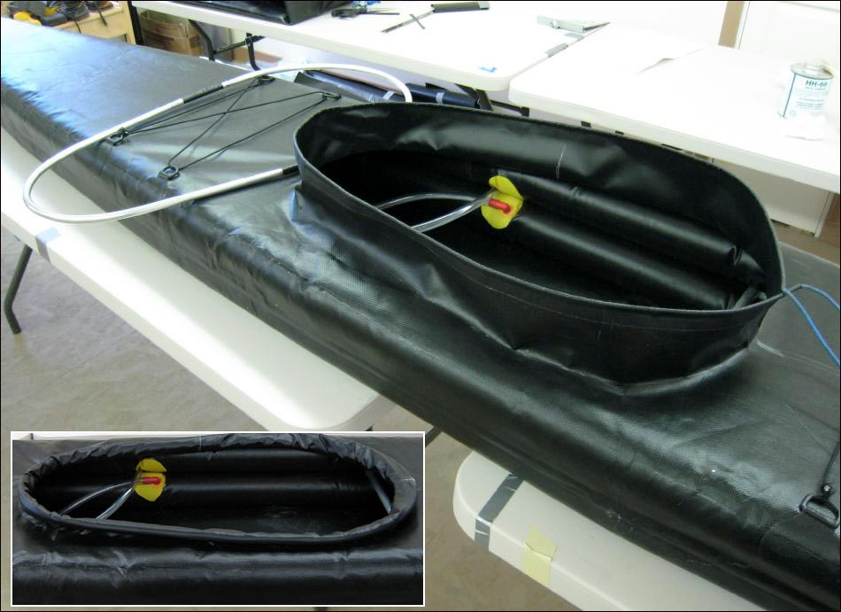

| Sonnet (Aluminum Coaming 1 of 5) | Menu Last Page Next Page |
|

The 32"X 16" (813mm X 406mm) removable aluminum coaming is easy to assemble and permits a smaller folder size than a "fixed coaming" . Use the {Back} key to return. The coaming is skinned with lightweight PVC (10oz). PVC Construction details are found on the next several pages.
|
|